Fun with Filters and Frequencies
Convolution, edges, sharpening, hybrid images, and multiresolution blending.
Part 1.1 · Convolutions from Scratch
I implemented convolution with four nested loops and with two loops. Both implementations flip the kernel in both directions and use zero-filled padding so the output has the same dimensions as the input. The two-loop version evaluates each neighborhood with a NumPy multiplication and sum.
def conv_four_loops(image, kernel):
image = np.asarray(image, dtype=np.float64)
kernel = np.asarray(kernel, dtype=np.float64)
h, w = image.shape
kh, kw = kernel.shape
# Flip the kernel vertically and horizontally for convolution.
flipped = kernel[::-1, ::-1]
# Use zero padding to preserve the input image size.
# For even-sized kernels, match SciPy's "same" alignment.
top, left = kh // 2, kw // 2
bottom, right = kh - 1 - top, kw - 1 - left
padded = np.pad(
image,
((top, bottom), (left, right)),
mode="constant",
constant_values=0
)
output = np.zeros((h, w), dtype=np.float64)
for y in range(h):
for x in range(w):
for ky in range(kh):
for kx in range(kw):
output[y, x] += (
padded[y + ky, x + kx] * flipped[ky, kx]
)
return output
def conv_two_loops(image, kernel):
image = np.asarray(image, dtype=np.float64)
kernel = np.asarray(kernel, dtype=np.float64)
h, w = image.shape
kh, kw = kernel.shape
flipped = kernel[::-1, ::-1]
top, left = kh // 2, kw // 2
bottom, right = kh - 1 - top, kw - 1 - left
padded = np.pad(
image,
((top, bottom), (left, right)),
mode="constant",
constant_values=0
)
output = np.zeros((h, w), dtype=np.float64)
for y in range(h):
for x in range(w):
patch = padded[y:y + kh, x:x + kw]
output[y, x] = np.sum(patch * flipped)
return output
box_filter = np.ones((9, 9), dtype=np.float64) / 81.0
Dx = np.array([[1.0, -1.0]])
Dy = np.array([[1.0], [-1.0]])
blurred = conv_four_loops(image, box_filter)
gx = conv_two_loops(image, Dx)
gy = conv_two_loops(image, Dy)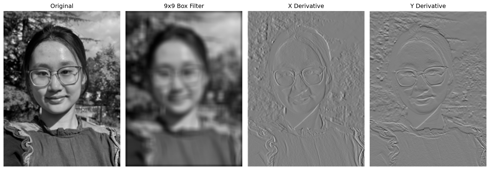
| Implementation | Runtime (s) | Maximum error vs. SciPy |
|---|---|---|
| Four loops | 2.515145 | 1.11 × 10⁻¹⁵ |
| Two loops | 0.254519 | 4.44 × 10⁻¹⁶ |
| SciPy | 0.007565 | Reference |
These timings use the same 256 × 192 selfie and box filter in one Codespaces run. The two-loop version is faster because NumPy handles the neighborhood arithmetic; SciPy is faster still. Errors are at floating-point precision. For this comparison, SciPy uses mode="same", boundary="fill", fillvalue=0. Zero padding can darken the blurred image near its borders. Even-sized filters use asymmetric padding matching SciPy’s “same” alignment. Later filtering uses symmetric boundary extension to reduce artificial border edges.
Part 1.2 · Finite Difference Operator
I convolved the cameraman image with Dₓ = [1, −1] and Dᵧ = [1, −1]ᵀ. The gradient magnitude is √(Iₓ² + Iᵧ²). A threshold of 0.16 retains the person, camera, and major outlines while suppressing some weak texture. This trades away some faint edges; ground texture remains noisy.
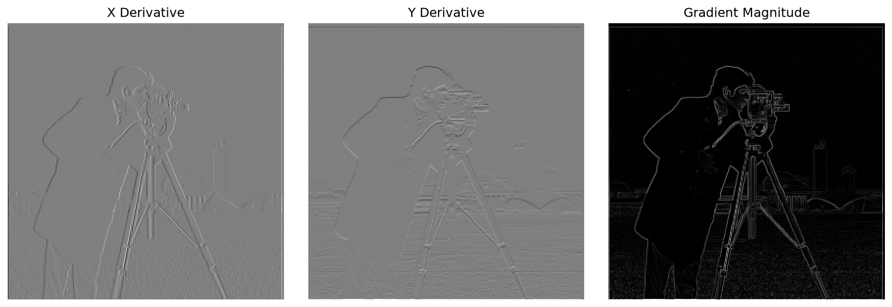
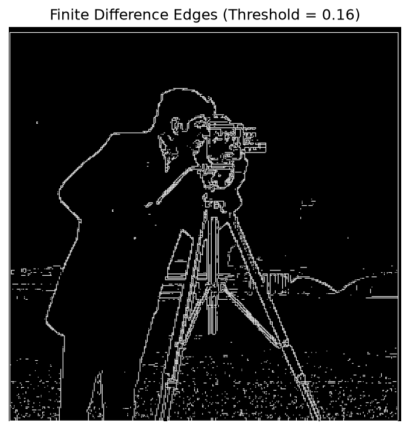
Part 1.3 · Derivative of Gaussian
I constructed a 7 × 7 Gaussian with σ = 1 using cv2.getGaussianKernel and the outer product of its 1D kernel with its transpose. Smoothing before differentiation reduces small texture responses. Because smoothing lowers gradient amplitudes, I use a lower threshold of 0.06 for the smoothed result.
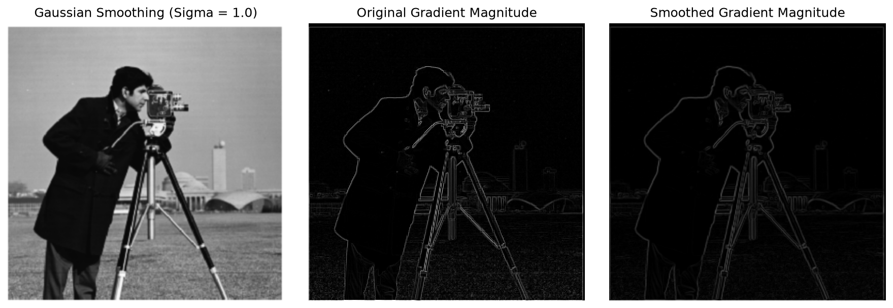
To combine the two operations, I convolved the Gaussian kernel with Dₓ and Dᵧ using full convolution, then convolved the image once per derivative with the resulting DoG kernels. The interior maximum errors are 6.38 × 10⁻¹⁶ for x and 5.69 × 10⁻¹⁶ for y. The full-image errors are also about 6 × 10⁻¹⁶ in this run. Finite-image boundary conventions can affect equivalence; the notebook checks the interior explicitly.
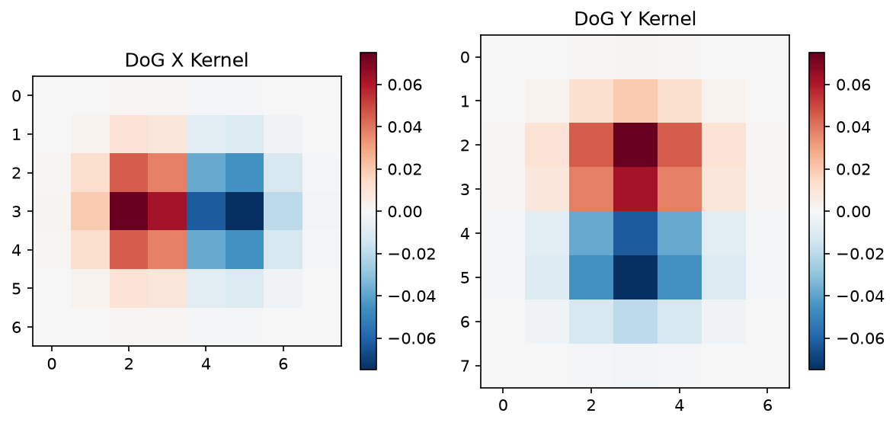
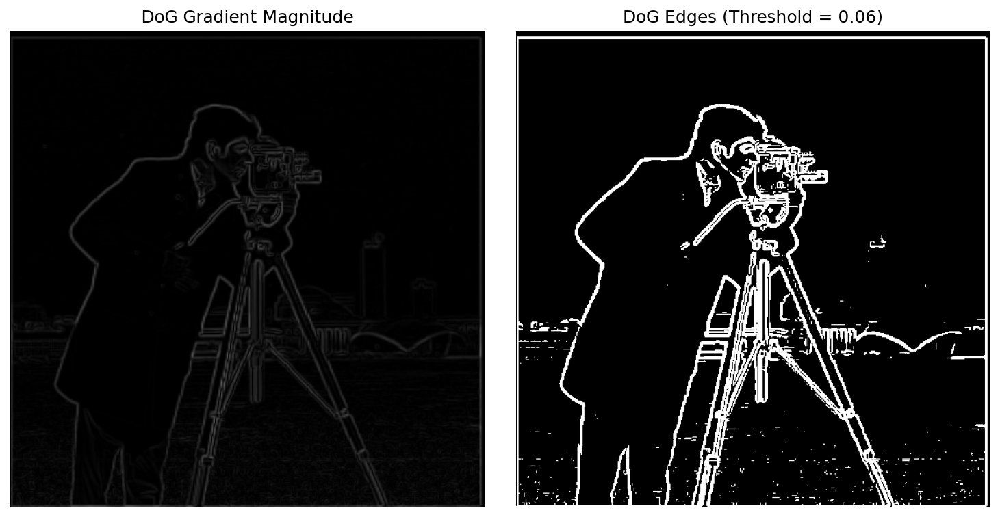
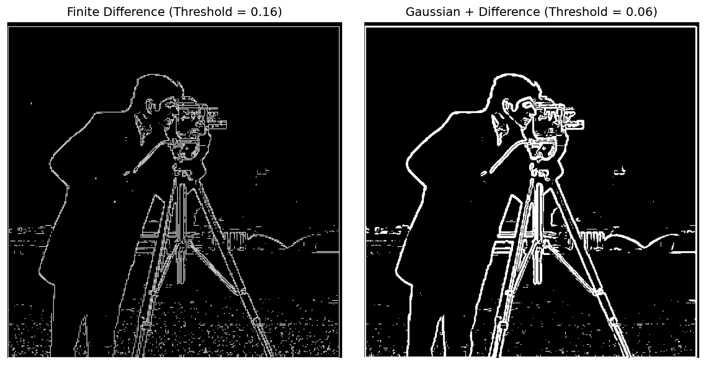
Part 2.1 · Image Sharpening
A Gaussian blur retains low frequencies. Subtracting it from the original gives a high-frequency component H = I − G ∗ I. Unsharp masking adds αH back: Isharp = I + α(I − G ∗ I). I implement this with a single kernel K = (1 + α)δ − αG, where δ is the centered impulse. Here G is 13 × 13 with σ = 2.
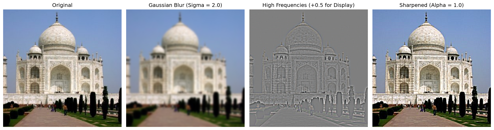
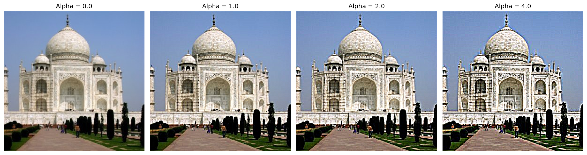
Increasing α makes the architectural outlines more pronounced. At larger values, contrast becomes harsh and halos appear. I selected α = 1 as a more restrained result. Signed detail images are offset only for display; final RGB images are clipped to [0, 1] when displayed or saved.
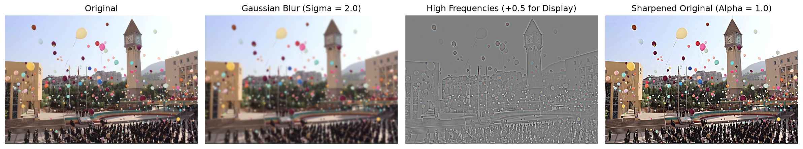
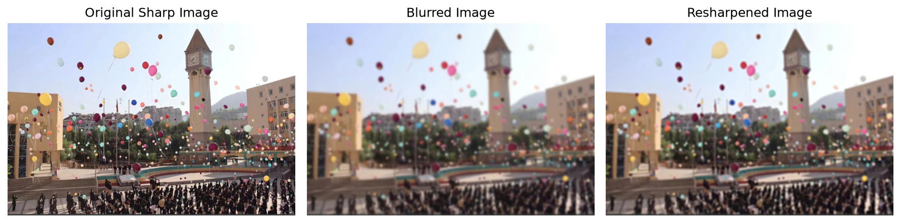
Resharpening improves edge contrast after blurring, but it does not fully restore the original small details. Blur has already removed information, and amplifying the remaining frequencies cannot recover it.
Part 2.2 · Hybrid Images
A hybrid combines low frequencies from one image with high frequencies from another: Ihybrid = Glow ∗ Ilow + w(Ihigh − Ghigh ∗ Ihigh). Fine details are more visible up close, while the smooth component becomes more apparent at a distance. I use grayscale for these required frequency hybrids.
Derek + Nutmeg: full process
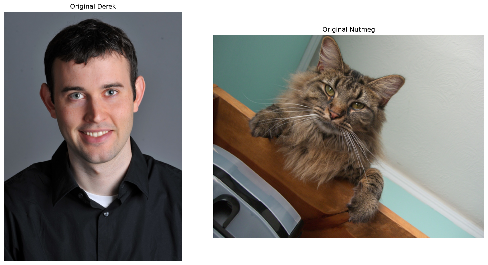
I used the course alignment helper with fixed eye coordinates to match the eye midpoint, eye spacing, and orientation. I then cropped the aligned pair to the shared face region. Nutmeg provides high frequencies with σhigh = 2 pixels and weight w = 0.7; Derek provides low frequencies with σlow = 4 pixels. These settings keep the cat’s details visible without overwhelming the human face.
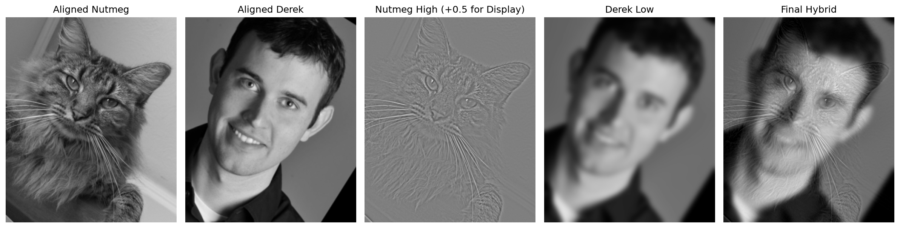
These Gaussian sigmas set gradual frequency transitions rather than hard cutoffs. For an ideal continuous Gaussian, the half-amplitude frequency is approximately 0.187/σ cycles per pixel: about 0.094 for σ = 2 and 0.047 for σ = 4. The sampled finite kernels approximate these responses.
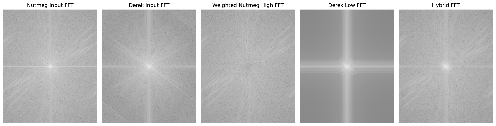
The low-pass spectrum concentrates energy near the center; the high-pass component suppresses the center and retains more outer-frequency structure. Their sum combines both bands. The spectra use log(|FFT| + 10⁻⁸) to avoid log(0). The visual change with viewing distance is clearest in this pair, although some facial structures still overlap.
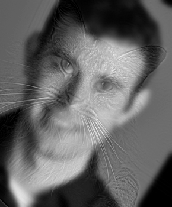
Two custom hybrids


I aligned the custom pairs by their eye centers, cropped around the face, enlarged Spider-Man by 1.12, and scaled Tony by 0.95 around the aligned eye midpoint. These small adjustments improve the relative face sizes.
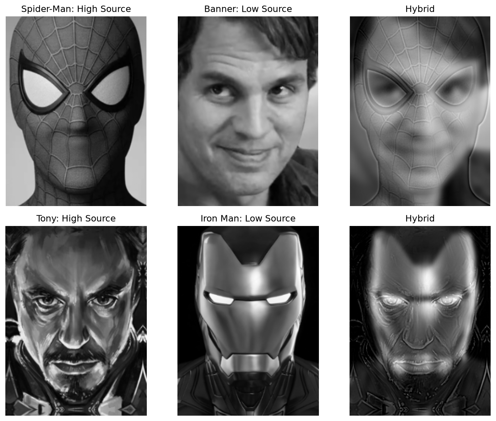
| Pair | High-frequency source | Low-frequency source | σ high / σ low | High weight |
|---|---|---|---|---|
| Spider-Man + Banner | Spider-Man | Banner | 2 / 5 px | 0.7 |
| Tony + Iron Man | Tony Stark | Iron Man | 1.2 / 3 px | 1.0 |
Spider-Man’s eye outlines and web texture overlay Banner’s smooth face. In the other pair, Iron Man’s helmet supplies the large shapes while Tony contributes fine facial structure. These pairs have more ghosting than Derek + Nutmeg because their shapes and illumination differ; eye alignment alone does not make all contours coincide.
Supplementary color overlays
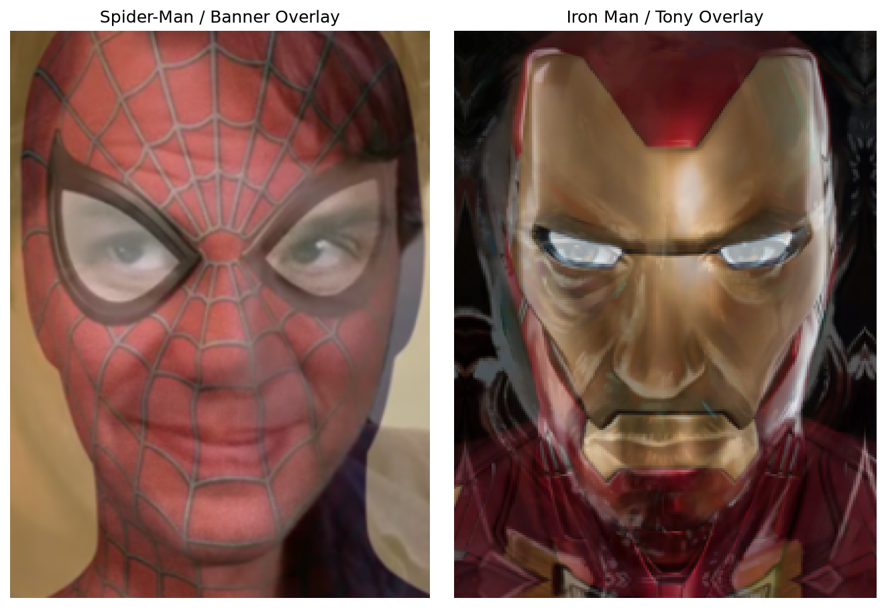
These weighted color overlays show the alignment and are included as additional results. They mix all frequencies directly. The three frequency hybrids above are the required Part 2.2 results.
Part 2.3 · Gaussian and Laplacian Stacks
Each stack has six levels and retains the original image dimensions. G₀ is the input; G₁ through G₅ blur the input with σ = 2, 4, 8, 16, and 32 pixels. I compute Lᵢ = Gᵢ − Gᵢ₊₁ for levels 0–4 and retain G₅ as the final residual. No downsampling or built-in pyramid functions are used. Summing the Laplacian levels reconstructs each input with maximum error 1.11 × 10⁻¹⁶.
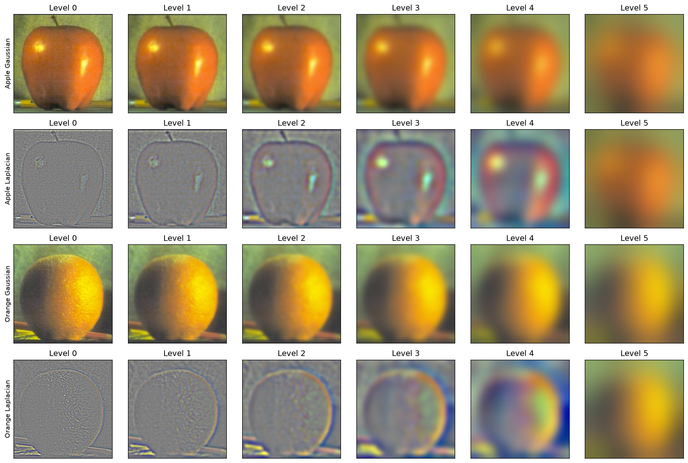
The following 4 × 3 arrangement recreates the structure of Figure 3.42(a–l): masked apple, masked orange, and their combination at three detail scales, followed by the reconstructed contributions and final Oraple. All six levels, including the residual, contribute to reconstruction.
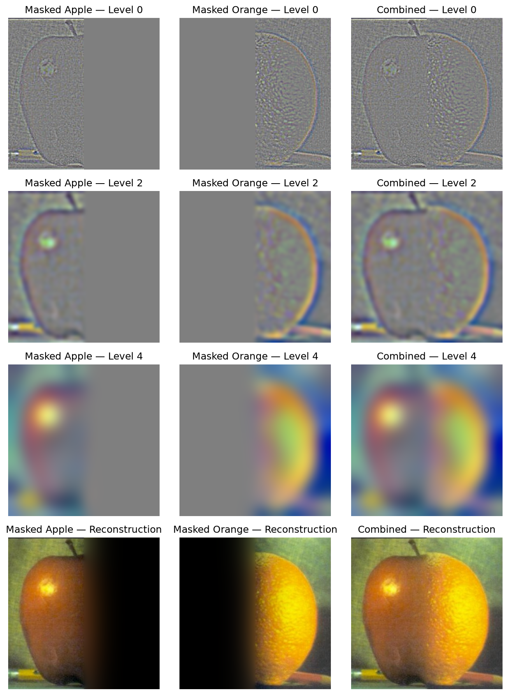
Part 2.4 · Multiresolution Blending
For each level, I blend the two Laplacian bands using the matching level of a Gaussian mask stack: Bᵢ = MᵢLᵢA + (1 − Mᵢ)LᵢB. Summing Bᵢ reconstructs the result. The mask transition is smoothed at different scales so that low-frequency differences spread across a wider region while fine details remain more localized.
Oraple
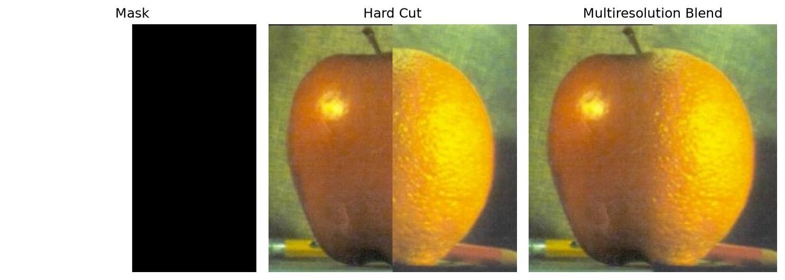
The starting mask selects apple on the left and orange on the right. Compared with the hard cut, the multiresolution result has a smoother color and brightness transition through the center while retaining fruit texture.
Two custom blends with irregular masks
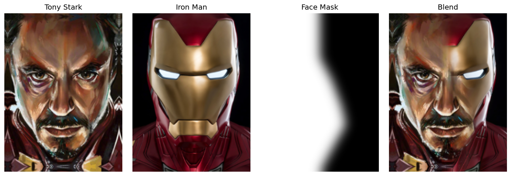
The Tony mask bends to retain the human nose and mouth while using armor on the right side. Its boundary is defined by interpolated positions across image height. I soften the initial mask with σ = 9 pixels, then construct its Gaussian stack. This avoids a rigid line cutting through the main facial features.
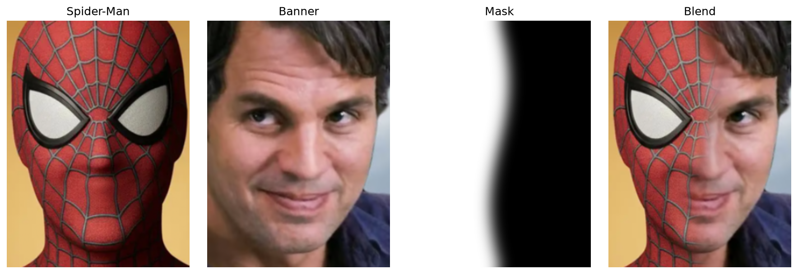
The Spider-Man mask selects the left side with a gently sinusoidal boundary, x = width × (0.50 + 0.05 sin(2πy/height)). It is also softened with σ = 9 before stack construction. The resulting half-face blend preserves Spider-Man’s eye and texture on the left and Banner’s face on the right.
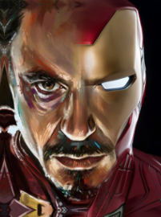
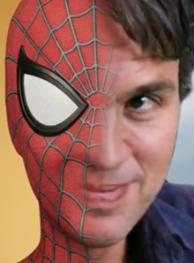
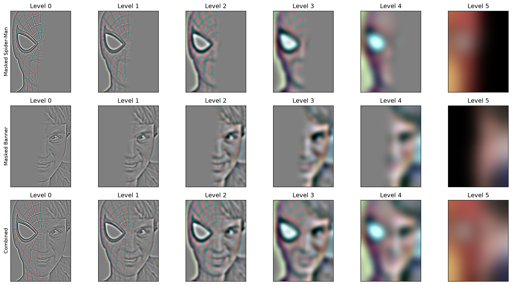
The process visualization shows how sharp eye and web details occupy the finer bands, while broad color and illumination changes occupy coarser bands. The mask stack gradually smooths the join across these scales. Remaining differences in face shape and lighting are still visible, but the transition is much less abrupt than a hard cut.
What I Learned
The most useful lesson was that the same image can be treated as a combination of frequency bands. High-frequency amplification changes apparent sharpness but cannot undo lost information. Combining separate frequency bands creates a hybrid, while blending corresponding bands with a mask creates a smoother spatial join. I also learned that alignment and relative face size matter as much as filter parameters: changing sigma cannot fix mismatched features.
References and Acknowledgements
Project specification and starter alignment code: CS180 Fall 2026 Project 2. Hybrid-image approach: Oliva, Torralba, and Schyns (2006). Multiresolution blending: Burt and Adelson (1983). Stack visualization follows the Figure 3.42 arrangement requested by the assignment. Character images and other custom inputs were selected and supplied for this project. Codex assisted with code organization, debugging, and preparation of this report; the final implementations and observations are available for review in the submitted notebook.